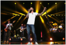
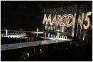
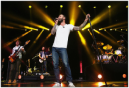
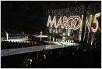

Maroon 5 is an American pop rock band from Los Angeles, California. It currently consists of lead vocalist Adam Levine, keyboardist and rhythm guitarist Jesse Carmichael, bassist Mickey Madden, lead guitarist James Valentine, drummer Matt Flynn, keyboardist PJ Morton, and multi-instrumentalist Sam Farrar.


Maroon 5 (formed 2001) has its roots in the high school friendship of four of the group members. The band earned a Best New Artist Grammy Award on the strength of their first album. They became pop superstars with a string of eight consecutive top 10 pop hit singles from 2011 through 2015.
Adam Levine and Jesse Carmichael enrolled in the State University of New York. There the pair were exposed to a wider range of music, particularly R&B and hip-hop. Upon returning to Los Angeles in 2001, they re-connected with the other former Kara's Flowers members, added guitarist James Valentine. The band received rejections from multiple labels, but a successful Viper Room performance led to signing with the independent label Octone Records who had a distribution deal with BMG. The label insisted on a name change for the group, and Kara's Flowers became Maroon 5. The name change represented the group's movement from mainstream pop sounds to an alternative approach to soul music.
Tour Dates


Madison Square Garden New York, NY
7:00 – 10:00 PM


Oracle Arena Oakland, CA
7:00 – 10:00 PM


Toyota Center Houston, TX
7:00 – 10:00 PM
 


